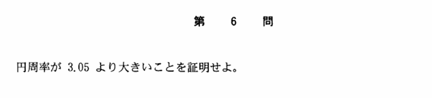

2003年 第6問
論証

分析
東大入試の数学の問題の中で最も有名な問題であるといってよいだろう。
円周の評価を内接正多角形で下から評価する発想、何角形で計算するのが良いかを考えることのような思考力が問える問題である。単純が故に思考の柔軟性を要求できている。
しかし、この解法は少し知識問題に終始しているともいえてしまう。むしろ、背景で記述したことのような文部科学省の指導要領改訂の話題など、日ごろから数学に関心を持っている人を高く評価したいという出題者の意図があったとも考えられる。
背景
とても有名だが、この問題が出された当時ゆとり教育が進められていて、文部科学省の指導要領の改訂において小学校で円周率を3で教えるというようになった。この問題は、円周率が3では円周とそれに内接する正六角形の全周の長さが等しくなっておかしいということを訴えるメッセージなのかもしれない。
また、普通に古典的に、円周を内接正多角形と外接正多角形ではさんで評価して計算したことは非常に有名である。